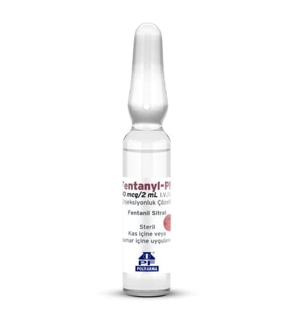

Fentanyl-Pf 100 mcg/2 ml I.V./I.M. Enjeksiyonluk Çözelti, 10 Adet

Ne için kullanılır
KT · Bölüm 1• FENTANYL-PF “opioid analjezikler” olarak adlandırılan gruptan güçlü bir ağrı kesici olan ve toplardamar ve kas içine uygulanan bir çözeltidir. FENTANYL-PF’nin güçlü ağrı kesici etkisi kısa bir süre devam eder. • 1 mL FENTANYL-PF 0,05 miligram fentanile eşdeğer fentanil sitrat içerir. • FENTANYL-PF kutuda, 10 adet 2 mL’lik renksiz, tip I, beyaz OPC noktalı, cam ampul olacak şekilde kullanıma sunulmaktadır. • FENTANYL-PF değişik türden ameliyatlarda ortaya çıkan ağrıyı engellemek ya da gidermek için kullanılır. FENTANYL-PF şu tür ameliyatlarda kullanılabilmektedir: - Operasyonun gerçekleştirildiği gün taburcu olunabilen kısa süreli ameliyatlar - Birkaç gün hastanede kalmanızı gerektirebilen daha uzun süreli ameliyatlar • FENTANYL-PF yüksek dozlarında, ventilatöre bağlıysanız (yani size yapay solunum uygulanıyorsa) doğal solunum hızınızı azaltmak amacıyla da kullanılır. Bu şekilde büyük
ameliyatlarda nöroleptik adı verilen sizi uyutan veya sersemliğe neden olan bir sedatif ilaçla birlikte sizi uyutmak amacıyla kullanılır.